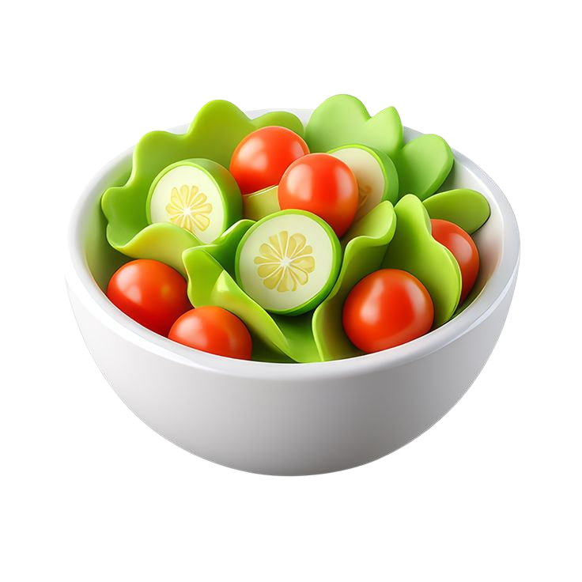

Software Engineering, CAMT Chiang Mai University
AI-RESTAURANT
CHATBOT
Elevate your restaurant to the digital era with an intelligent AI chatbot.
Experience Live Ordering
Scan the QR code on your mobile device or tap the button below to test real-time table ordering.
Core Platform Capabilities
Essential user-facing features and responsive operational flows
User Authentication
Secure login and role-based access control.
Menu & Allergen Directory
Digital menu catalog with granular allergen filters.
AI Chatbot Interaction
Context-aware conversational assistant for real-time inquiries.

Dietary Recommendation
Tailored meal suggestions matched with individual preferences.
Order Management
Live cart synchronization with kitchen and instant order placement.
Real-time Notifications
Live kitchen queue tracking and ready-to-serve alerts.
System Architecture & Data Flow
End-to-end architecture: 2-tier Typhoon LLM reasoning and Supabase Realtime state sync
Vue 3 Client App
Dynamic QR session binding with unique table suffix (e.g. Table 01-A01).
Express API Service
Exposed via Cloudflare Tunnel; handles sanitization and chat orchestrations.
2-Stage Typhoon LLM
Gatekeeper intent validation + DB context grounding for zero-hallucination allergens.
Supabase Realtime
Database RPCs sync live cart and push instant cooking alerts via Postgres Changes.
How AI Context & Inquiries Work
- Gatekeeper Classifier: Low-temperature system prompt verifies if user input relates to dining/allergies before expensive processing.
- Dynamic DB Grounding: Injects live menu items, ingredients, and allergen tags directly from PostgreSQL into prompt context.
- Strict Schema & Recovery: Returns structured JSON (`recommendedItemIds`, `orderItems`) with fallback keyword extraction to prevent intent loss.
How Order State & Sync Work
- Multi-Client Table Binding: Generates randomized suffixes per guest device (`01-A12`) to prevent state collisions on shared tables.
- Atomic Cart RPC: Shared cart states are committed via `sync_table_cart` and stored in `table_sessions`.
- Real-Time Broadcast: Kitchen tracker (`StaffLiveOrders.vue`) listens to `postgres_changes` on `orders` for live Kanban updates without polling.
Key Impact & System Metrics
Real-world performance indicators across AI reasoning, database sync, and reliability
Average dual-stage Typhoon AI inference & processing speed
Strict dietary & allergen verification accuracy against DB tags
Instant kitchen alerts via Supabase WebSocket broadcast
Seamless real-time Thai & English dual-language operation
Designed for Both Diners & Kitchens
A unified ecosystem bridging frictionless ordering with high-efficiency kitchen operations
Frictionless & Safe Dining
Elevate the dining journey with rapid mobile self-service and intelligent conversational assistance.
- ✓ Zero Wait Time: Order directly via mobile browser without queuing or flagging down busy waitstaff.
- ✓ 100% Allergen Shield: Granular dietary filtering cross-checks dishes against individual health restrictions.
- ✓ Tailored Recommendations: Smart dish suggestions aligned with taste profiles, spice levels, and budget.
Streamlined Kitchen Workflow
Boost throughput, eliminate human transcription errors, and manage queue states seamlessly.
- ✓ Peak-Hour Relief: Relieves front-of-house staff pressure so they can prioritize customer hospitality.
- ✓ Zero Order Mishaps: Eliminates handwriting and communication errors with direct digital dispatch.
- ✓ Real-Time Kanban Sync: Instant status transitions across Pending, Preparing, and Ready-to-Serve.